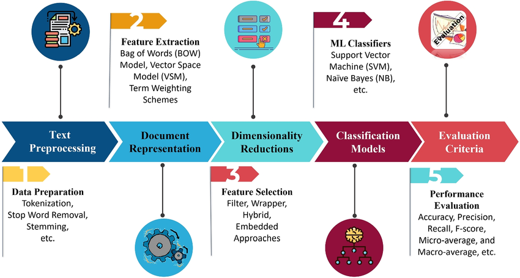
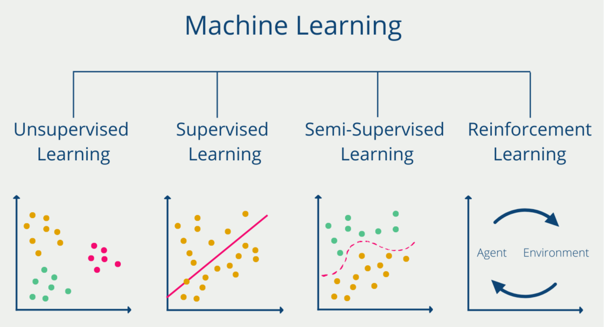

Our project advances automated classification of NST codes, critical for streamlining trade. We conducted an extensive review of 10 studies (2017–2023) via Google Scholar, using keywords like "NST," "Harmonized Code," "ML," and "AI." These studies informed our supervised learning approach for HS code prediction, combining traditional machine learning with modern transformer-based models to address challenges like noisy, multilingual, or short product descriptions.
Key Research Findings
The reviewed studies highlight diverse approaches to HS code classification, from traditional ML to large language models (LLMs). Below, we summarize the 10 most relevant projects, showcasing their methodologies and how they shape our work.
Ashish Vaswani et al. introduced the Transformer, a novel architecture relying solely on attention mechanisms, eliminating recurrent and convolutional layers. Tested on WMT 2014 English-to-German and English-to-French translation tasks, it achieved 28.4 and 41.8 BLEU scores, respectively, outperforming prior models. The Transformer’s parallelization and efficiency inspired our use of transformer-based models like DistilBERT for NST code classification, enabling robust handling of complex text patterns.
View Study
Fatma Ali Mohamed Ali Altaheri applied six ML models (e.g., Linear SVM, Decision Trees) using the CRISP-DM framework to predict HS codes for Dubai Customs. The study used real customs datasets, preprocessing them for ML compatibility, and achieved 76.3% accuracy with Linear SVM. This work guided our model selection process, emphasizing the importance of testing multiple algorithms to balance accuracy and computational efficiency in NST classification.
View Study
Jeffrey Luppes used Convolutional Neural Networks (CNNs) with domain-specific word embeddings from DBpedia to classify HS-2 and HS-4 codes. The approach achieved F1-scores of 0.92 (HS-2) and 0.88 (HS-4) across two datasets with over 1200 classes. The use of convolutional layers and batch normalization informed our exploration of neural networks for handling short, technical NST descriptions.
View Study
Deniss Ruder analyzed 1.1M US import descriptions, representing 3243 HS-6 codes, using algorithms like Rocchio, SVM, Random Forest, and CNNs with TF-IDF, Word2Vec, and GloVe features. The study demonstrated high efficiency in classifying uninformative texts, guiding our preprocessing techniques (e.g., TF-IDF) and model selection for robust NST code prediction in noisy datasets.
View Study
Pedro Pinheiro and Marcos Amaris applied NLP techniques and Support Vector Machines (SVM) to classify 340,000 product descriptions into 50 NCM classes, achieving 84% accuracy. The study’s preprocessing pipeline, including text cleaning and feature extraction, directly influenced our data preparation strategy for NST code classification.
View Study
Eunji Lee et al., in collaboration with Korea Customs Service, developed a KoELECTRA-based model to classify HS codes, achieving 95.5% top-3 accuracy across 265 subheadings using 129,084 past cases. This high accuracy validated our exploration of transformer models for precise NST code predictions in customs applications.
View Study
Gede Yudi Paramartha et al. tackled multilingual and imbalanced HS code data for Indonesian Customs, using TF-IDF with bigrams and One-Hot Encoding. Their Multinomial Naive Bayes model achieved a 72.74% F1-score for full HS codes, informing our approach to handling mixed-language NST descriptions.
View Study
Pinheiro and Amaris developed a four-stage cascaded approach using SVM and Naive Bayes with NLP, classifying 340,000 product descriptions into 98 NCM classes with 90% accuracy. This multi-stage pipeline inspired our hierarchical classification strategy for NST codes.
View Study
Angga Wahyu Anggoro et al. utilized DistilBERT, a lightweight transformer, to classify HS codes from short, noisy commodity texts. The model’s performance matched BERT’s while requiring fewer resources, guiding our use of efficient transformers for NST classification in resource-constrained settings.
View Study
Ignacio Marra de Artiñano et al. evaluated LLMs like ChatGPT 3.5 for HS code classification using agricultural product descriptions, achieving 60–90% accuracy across datasets. Their robust generalization across diverse data encouraged our exploration of LLMs for NST classification.
View Study
Traditional ML vs. Modern Approaches
Traditional ML models (e.g., SVM, Random Forest) excel in controlled datasets but struggle with cross-dataset generalization. Modern approaches like transformers and LLMs offer robust performance across diverse, noisy data. Our project combines both, leveraging traditional ML for interpretability and transformers for handling complex text patterns, ensuring scalability and accuracy for NST code classification.
Machine Learning: The Engine Behind NST Classification
Imagine teaching a child to identify fruits: you show them apples and oranges, label each one, and over time, they learn to recognize new fruits based on patterns. Machine learning (ML) works similarly, enabling computers to learn from data without explicit programming. In our project, ML powers the automated classification of NST codes, turning messy product descriptions into precise, tariff-ready labels for international trade.
What Is Machine Learning?
At its core, ML is about finding patterns in data to make predictions or decisions. As Shalev-Shwartz and Ben-David put it, it’s “the automated detection of meaningful patterns in data,” a tool now ubiquitous in tasks like spam filtering, image recognition, and—crucially for us—classifying trade goods. Our project uses ML to analyze thousands of product descriptions, predicting NST codes with high accuracy. This process involves feeding algorithms labeled data (e.g., “steel bolts” → NST code 10) and letting them learn the underlying patterns.
The Machine Learning Workflow
Building an ML model is like crafting a recipe: you gather ingredients, prepare them, cook, taste, and adjust. For NST classification, our workflow includes:
- Data Collection: Gathering product descriptions and their NST codes, often noisy or multilingual.
- Preprocessing: Cleaning data and extracting features using techniques like TF-IDF or Word2Vec, inspired by studies like Ruder’s (2020).
- Training: Feeding labeled data to models like SVM or transformers to learn patterns.
- Evaluation: Testing models with metrics like F1-score to ensure accuracy.
- Deployment: Integrating the model into a system for real-time NST code prediction.
The diagram below illustrates this process:

The Pillars of Machine Learning
ML isn’t one-size-fits-all; it’s a toolbox with various key approaches, each suited to different problems. Our project leans heavily on supervised learning, but understanding all subfields helps us choose the right tool. The image below shows their relevance to NST classification:

- Supervised Learning: Like a teacher guiding a student, this uses labeled data (e.g., product descriptions with NST codes) to predict outcomes. It’s our go-to for NST classification, achieving high accuracy with models like SVM or transformers. Pros: Precise with labeled data. Cons: Requires extensive labeling.
- Unsupervised Learning: Think of sorting a messy closet without labels—it finds patterns in unlabeled data, like clustering similar products. Useful for exploratory analysis but less suited for our precise classification needs. Pros: No labels needed. Cons: Less control over outcomes.
- Semi-Supervised Learning: A hybrid approach, using a small set of labeled data and a large pool of unlabeled data, like learning from a few examples and guessing the rest. It’s promising for scaling our NST dataset. Pros: Efficient with limited labels. Cons: Complex to implement.
- Reinforcement Learning: Picture a robot learning to navigate by trial and error, rewarded for good moves. It’s great for dynamic systems but less relevant for our static classification task. Pros: Adapts to changing environments. Cons: Computationally intensive.
Choosing the Right Model
Picking an ML model is like choosing a car: you need the right fit for the journey. For NST classification, we tested various models, each with unique strengths:
- Linear Models (e.g., Logistic Regression): Simple and interpretable, like a bicycle for short trips. Great for smaller datasets but may struggle with complex patterns.
- Tree-based Models (e.g., Random Forest, XGBoost): Like a sturdy SUV, these handle complex, imbalanced data well, making them robust for diverse product descriptions.
- Support Vector Machines (SVM): Precise like a sports car, SVMs excel in high-dimensional text data, as seen in studies like Pinheiro’s (2021).
- Neural Networks (e.g., CNNs, Transformers): The racecars of ML, these capture intricate patterns in noisy or short texts, ideal for our transformer-based experiments.
Our approach? Test them all. We evaluate models using metrics like F1-score and precision, balancing accuracy with computational efficiency. Techniques like TF-IDF and Word2Vec, drawn from reviewed studies, enhance our feature extraction, ensuring models learn the right patterns from product descriptions.
By blending supervised learning with advanced preprocessing and model experimentation, we’re building a system that not only classifies NST codes accurately but also scales to real-world trade challenges.